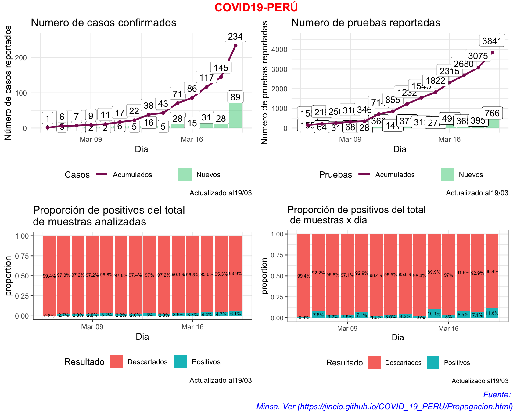
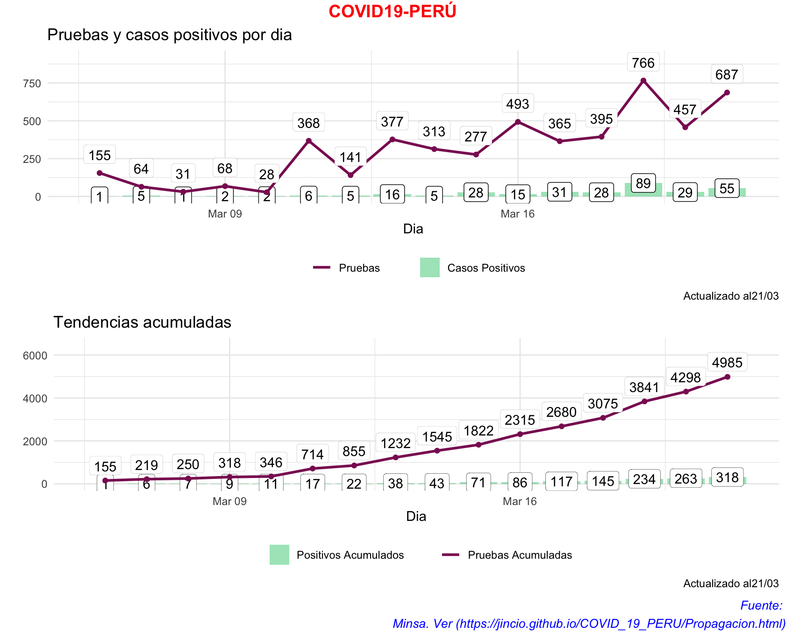
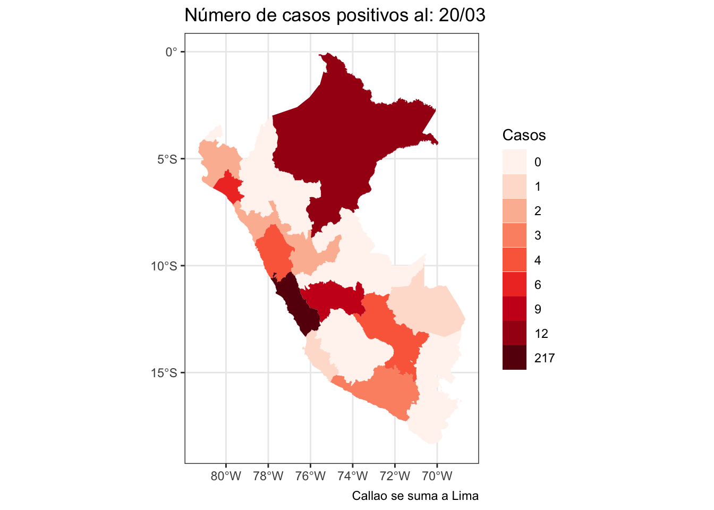
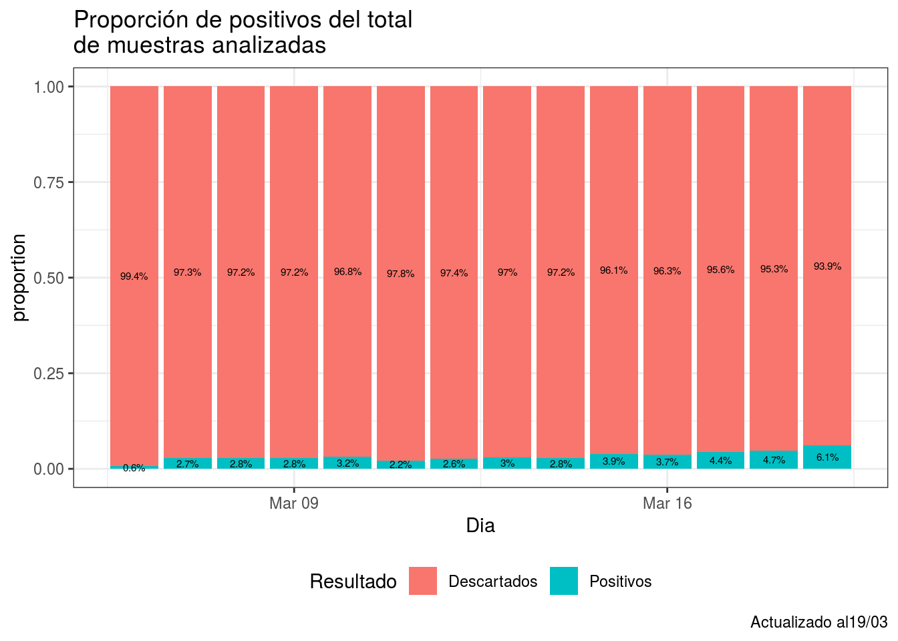
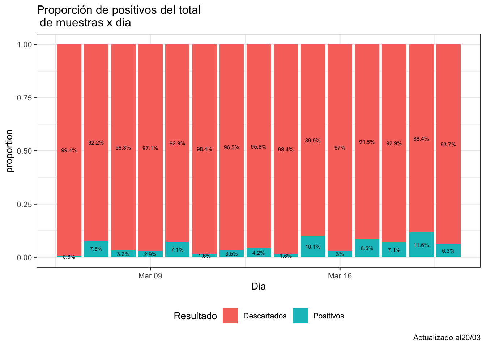
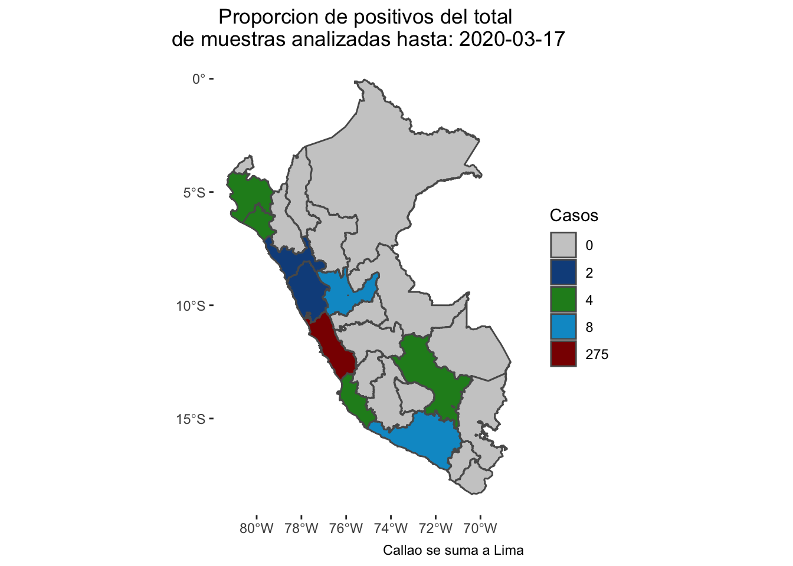
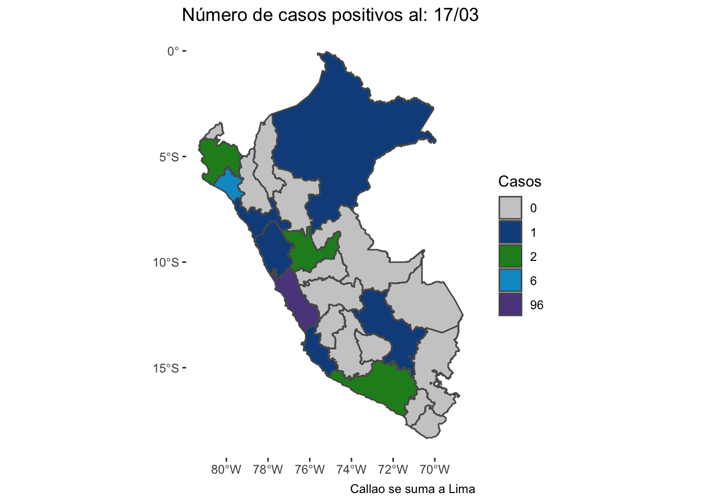
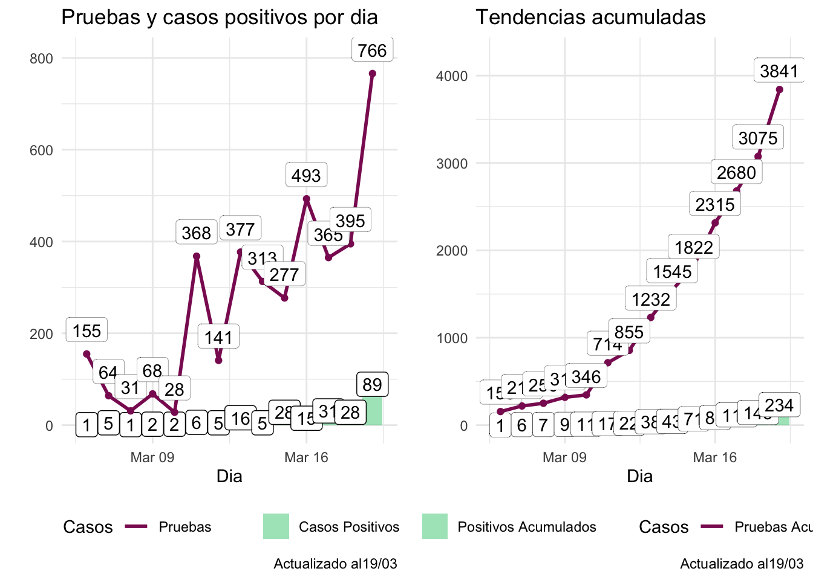

Para los gráficos he adaptado del post de Gabriel Carrasco Escobar (http://gcarrasco.rbind.io/blog/covid19_viz/)








| Dia | Positivos | Pruebas_aplicadas | Pruebas_XDia | Nuevos_Positivos |
|---|---|---|---|---|
| 2020-03-06 | 1 | 155 | 155 | 1 |
| 2020-03-07 | 6 | 219 | 64 | 5 |
| 2020-03-08 | 7 | 250 | 31 | 1 |
| 2020-03-09 | 9 | 318 | 68 | 2 |
| 2020-03-10 | 11 | 346 | 28 | 2 |
| 2020-03-11 | 17 | 714 | 368 | 6 |
| 2020-03-12 | 22 | 855 | 141 | 5 |
| 2020-03-13 | 38 | 1232 | 377 | 16 |
| 2020-03-14 | 43 | 1545 | 313 | 5 |
| 2020-03-15 | 71 | 1822 | 277 | 28 |
| 2020-03-16 | 86 | 2315 | 493 | 15 |
| 2020-03-17 | 117 | 2680 | 365 | 31 |
| 2020-03-18 | 145 | 3075 | 395 | 28 |
| 2020-03-19 | 234 | 3841 | 766 | 89 |
Para la construcción de la tabla he usado la información difundida por MINSA en su cuenta oficial de twitter [@Minsa_Peru](https://twitter.com/Minsa_Peru). Existe también la página https://www.gob.pe/8662.
03/19
Casos:🗓 Reporte │ Esta es la situación del coronavirus #COVID19 en Perú hasta las 12:00 horas del 19 de marzo. Se registran dos altas. #PerúEstáEnNuestrasManos
— Ministerio de Salud (@Minsa_Peru) March 19, 2020
Para más información, visita: https://t.co/F4GaDrN5dc pic.twitter.com/zYppUus7Ip
Fallecidos:
Segundo y tercero🔴 URGENTE | El #Minsa lamenta informar la sensible muerte de dos ciudadanos por coronavirus #COVID19 en territorio peruano. Extendemos nuestras condolencias a sus familias. pic.twitter.com/UF5X1ukqtR
— Ministerio de Salud (@Minsa_Peru) March 20, 2020
Primero
🔴COMUNICADO | El #Minsa lamenta informar que, a las 15:00 horas de hoy, jueves 19 de marzo, se registró el primer fallecimiento por #COVID19. pic.twitter.com/sgC0nhk87b
— Ministerio de Salud (@Minsa_Peru) March 19, 2020
03/18
🗓 Reporte │ Esta es la situación del coronavirus #COVID19 en Perú hasta las 7:00 horas del 18 de marzo. #PerúEstáEnNuestrasManos
— Ministerio de Salud (@Minsa_Peru) March 18, 2020
Para más información, visita: https://t.co/F4GaDrvulE pic.twitter.com/pPPwxu13dG
03/17
🗓 Reporte │ Esta es la situación del coronavirus #COVID19 en Perú hasta las 8:20 horas del 17 de marzo. #PerúEstáEnNuestrasManos
— Ministerio de Salud (@Minsa_Peru) March 17, 2020
Para más información, visita: https://t.co/F4GaDrvulE pic.twitter.com/8yojgp7eYw
03/16
🗓 Reporte │ Esta es la situación del coronavirus #COVID19 en Perú hasta las 8:46 horas del 16 de marzo. #PerúEstáEnNuestrasManos
— Ministerio de Salud (@Minsa_Peru) March 16, 2020
Para más información, visita: https://t.co/F4GaDrvulE pic.twitter.com/fsY4PTgtFL
03/15
🗓 Reporte │ Esta es la situación del coronavirus en Perú hasta las 13:10 horas del 15 de marzo.
— Ministerio de Salud (@Minsa_Peru) March 15, 2020
Para más información, visita: https://t.co/F4GaDrvulE pic.twitter.com/HUR87UVlxQ
03/14
🗓 Reporte │ Esta es la situación del coronavirus en Perú hasta las 19:20 horas del 14 de marzo.
— Ministerio de Salud (@Minsa_Peru) March 15, 2020
Para más información, visita: https://t.co/F4GaDrvulE pic.twitter.com/102MJF7uPE
03/13
🗓 Reporte │ Esta es la situación del coronavirus en Perú hasta las 16:00 horas del 13 de marzo.
— Ministerio de Salud (@Minsa_Peru) March 13, 2020
Para más información, visita: https://t.co/ATXAITDSWN pic.twitter.com/ERDFeBV7Tq
03/12
🗓 Reporte │ Esta es la situación del coronavirus en Perú hasta las 9:55 horas del 12 de marzo.
— Ministerio de Salud (@Minsa_Peru) March 12, 2020
Para más información, visita: https://t.co/ATXAITDSWN pic.twitter.com/Yr2gGdPc1f
03/11
🗓 Reporte │ Esta es la situación del coronavirus en Perú hasta las 20:00 horas del 11 de marzo.
— Ministerio de Salud (@Minsa_Peru) March 12, 2020
Para más información, visita: https://t.co/ATXAITDSWN pic.twitter.com/RgArH78FMz
03/10
🗓 Reporte │ Esta es la situación del coronavirus en Perú hasta las 8:00 horas del 10 de marzo.
— Ministerio de Salud (@Minsa_Peru) March 10, 2020
Para más información, visita: https://t.co/Mv594Y83Y2 pic.twitter.com/y5o2DZffuL
03/09
🗓 Reporte │ Esta es la situación del coronavirus en Perú hasta las 8:30 horas del 9 de marzo.
— Ministerio de Salud (@Minsa_Peru) March 9, 2020
Para más información, visita: https://t.co/ATXAITDSWN pic.twitter.com/VUWdMFaJkJ
03/08
Este tweet fue RT por el Minsa, por eso asumo que es la información oficial. MINSA no publicó ningún reporte como en los dias anteriores o posteriores.